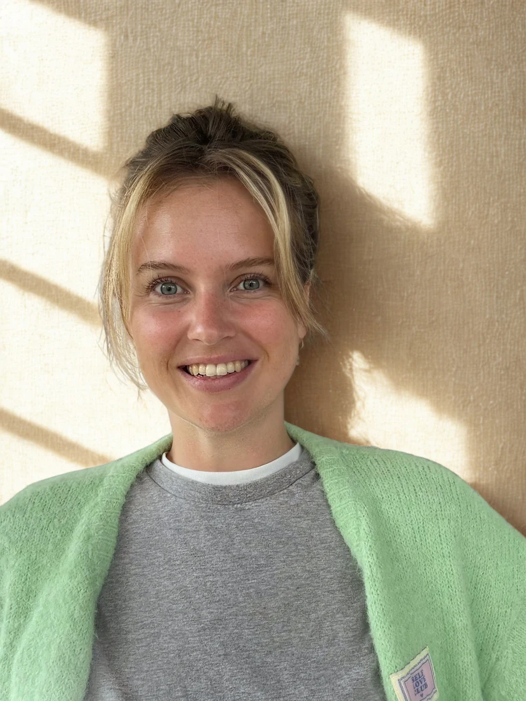
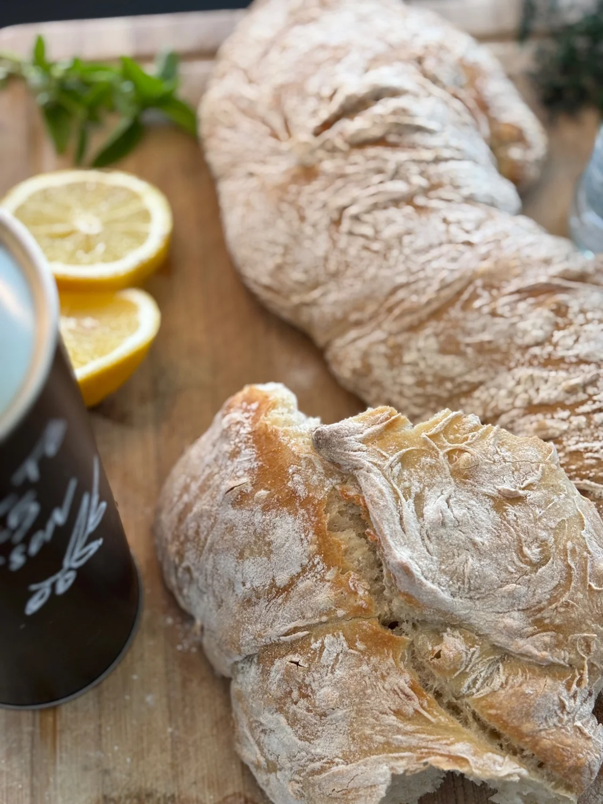
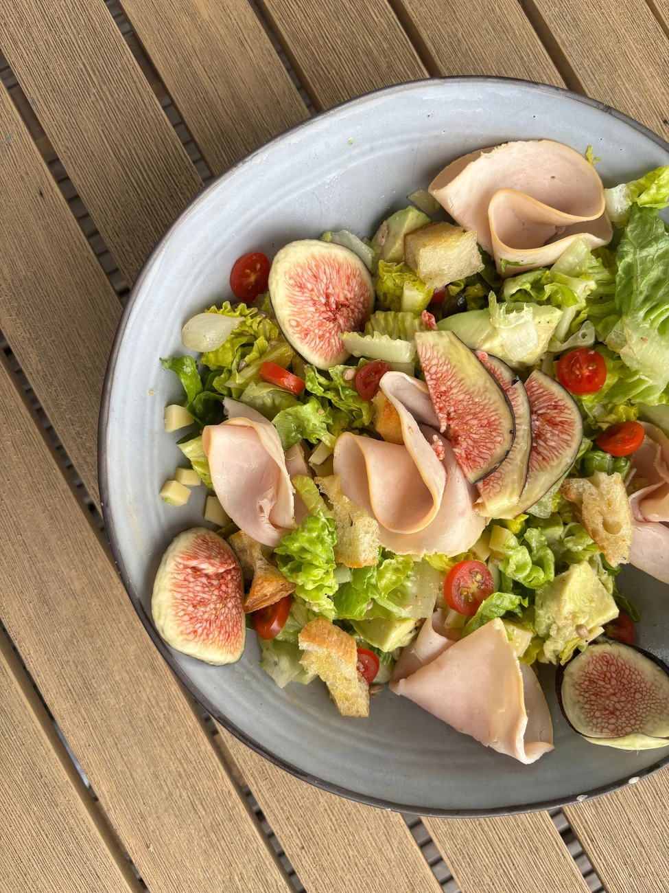

Grazing box
 01 / GRAZE & SHARE
01 / GRAZE & SHAREA generous box of cheeses, charcuterie, dips, bread and fresh extras. Delivered ready to put on the table.
€75 for 6 people
View menu & detailsCATERING · ARCEN & SURROUNDINGS
From a generous grazing box to homemade meals for your week. Personally prepared, with care for what matters to you.
CATERING · 3 WAYS TO SHARE
01 / GRAZE & SHAREA generous box of cheeses, charcuterie, dips, bread and fresh extras. Delivered ready to put on the table.
€75 for 6 people
View menu & details 02 / SWEET & SAVOURY
02 / SWEET & SAVOURYFilled rolls, fresh salads and something sweet. Or make it brunch with croissants, yoghurt and fruit.
Lunch €17.50 · Brunch €22.50 per person
View menu & details 03 / COLD, WARM OR BOTH
03 / COLD, WARM OR BOTHColourful sharing dishes, warm favourites or a little of both. We’ll create one menu that works for your whole gathering.
Price on request
View menu & details
The person behind your tableNEW IN ARCEN · 2026
I’m Pauline, a mum of two and the cook behind this new business in Arcen. I prepare with care, listen to your wishes and love making shared meals feel special.
Meet PaulineAn idea or a plan already in mind? Tell me about it. I’ll personally reply within 48 hours.


